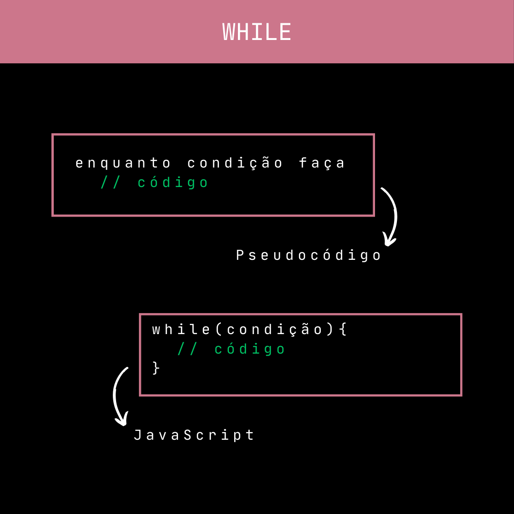
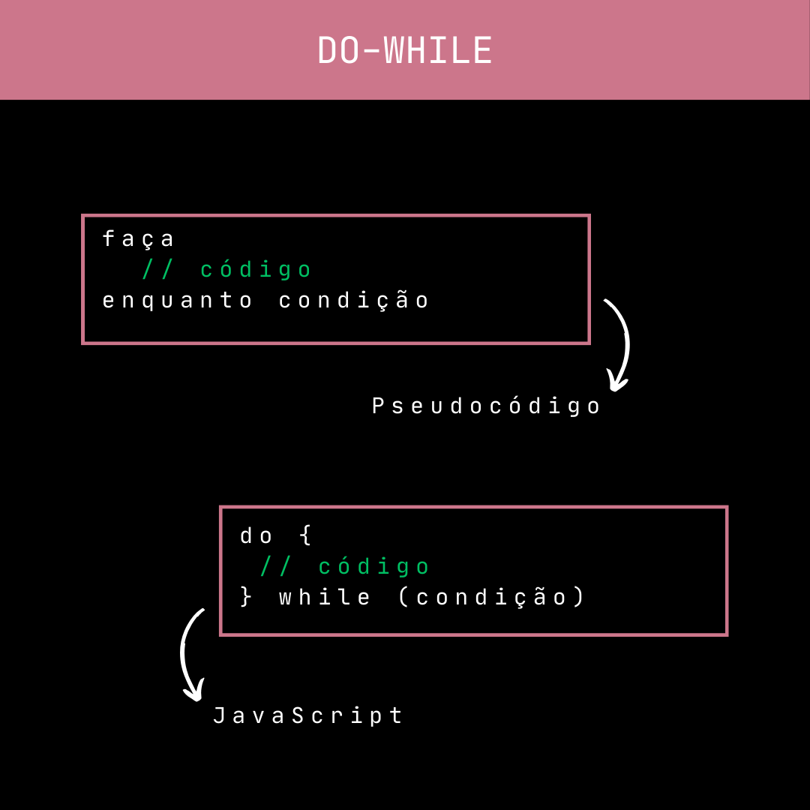

Aula 18 - Diferença entre While e Do-While
A diferença principal entre as estruturas de controle de fluxo "while" e "do-while" em muitas linguagens de programação é quando a condição é verificada em relação à execução do bloco de código.
No while, a condição é verificada antes da execução do bloco de código. Se a condição for falsa desde o início, o bloco de código pode nunca ser executado.
No do-while, a condição é verificada após a execução do bloco de código. Isso garante que o bloco de código será executado pelo menos uma vez, mesmo se a condição for falsa desde o início.
Resumindo, a principal diferença é que o while verifica a condição antes de executar o bloco de código, enquanto o do-while verifica a condição após a execução do bloco de código, garantindo que o bloco seja executado pelo menos uma vez.